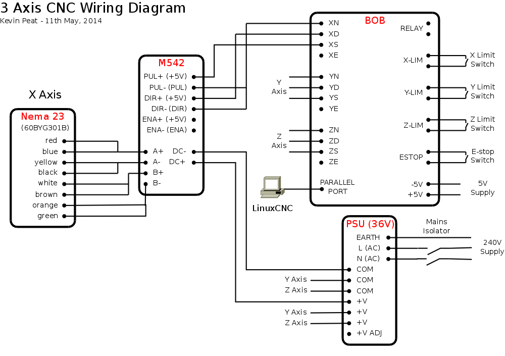
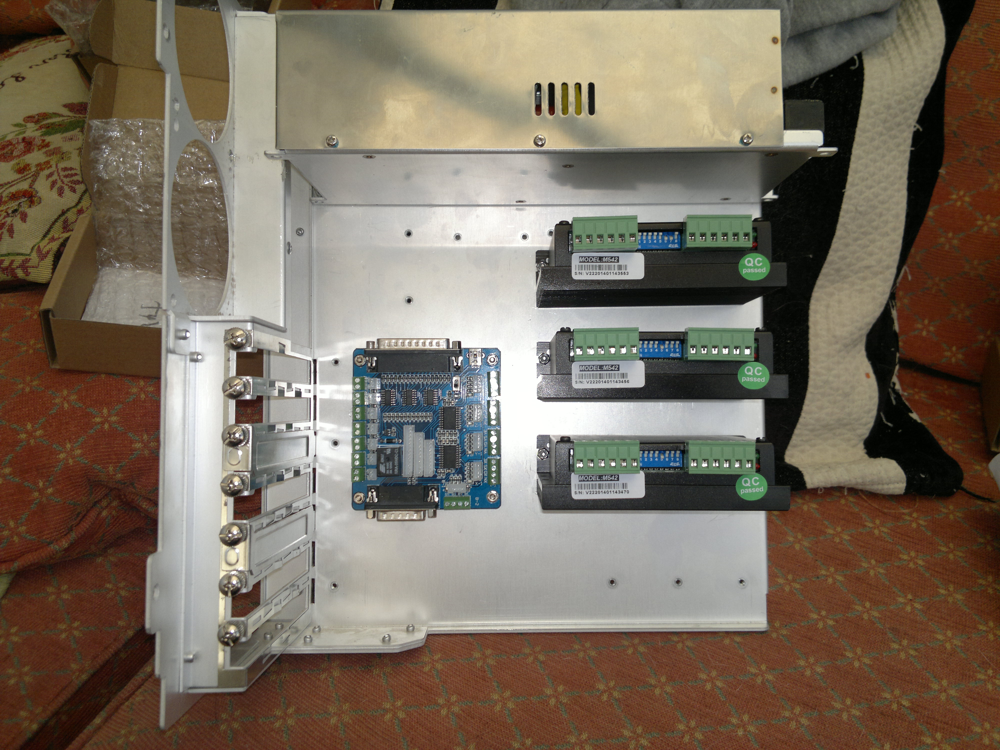
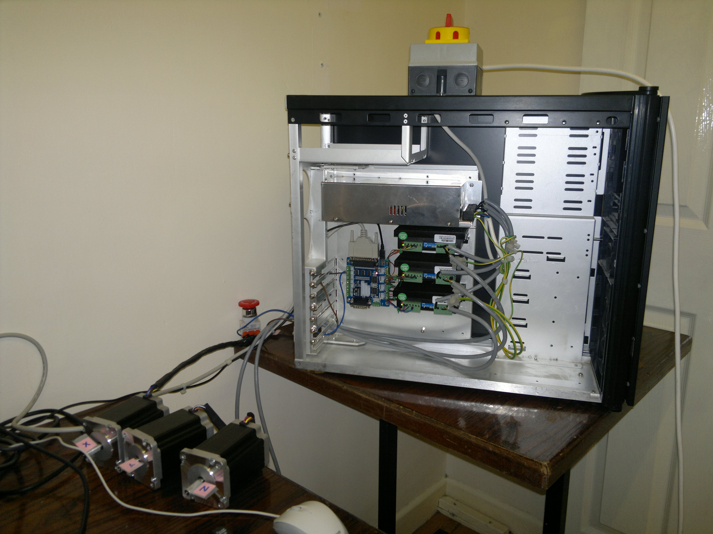
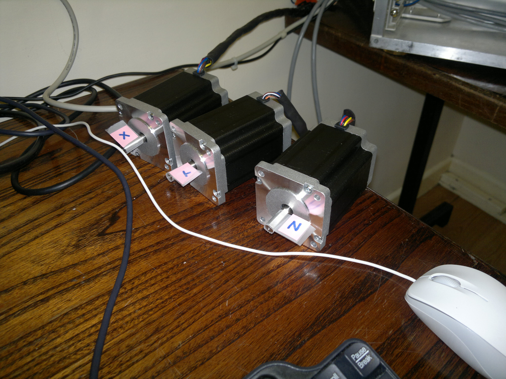
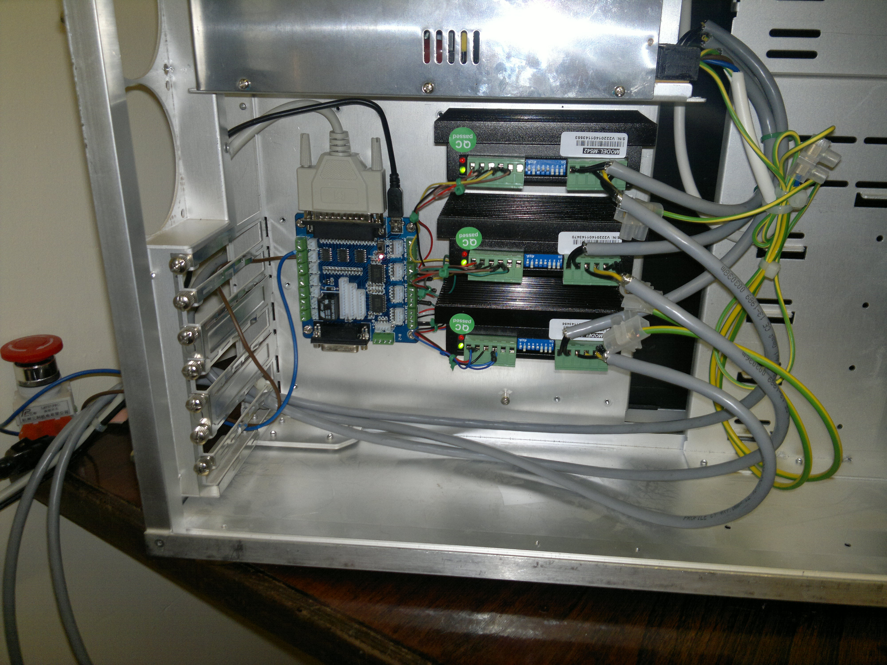
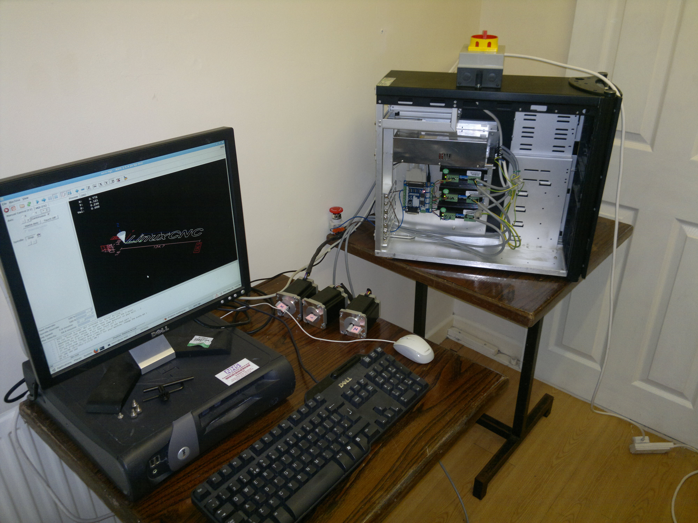

CNC DIY Build: Design | Electronics | Gantry | Assembly | Z-Axis | Spindle | Software
CNC Electronics Control Box
I bought a large old Coolermaster PC case to house the CNC control electronics. Once the contents were removed there was plenty of space for the steppers drivers, BoB and power supply. I removed the PC power supply but may refit it in the future as the voltages available can be quite useful. I fitted a mains isolating switch to the top of the case as can be seen below.
The connections from the stepper drivers to the steppers themselves need to be carefully wired to reduce the chance of interference. Use shielded cable and ground the shielding only at the control box end to avoid potential ground loops. Connections to the e-stop button, limit switches (not yet fitted) and potentially the VFD should be similarly wired.
Best practice is to wire the e-stop so that it works independently from the BoB so regardless of the PC/BoB state pressing the e-stop will shut-off the machine. I decided not to do that at this stage.
Many different types of steppers are available with different wiring colours and schemes. I found this page very useful in getting the stepper wiring right.






Return to home page.